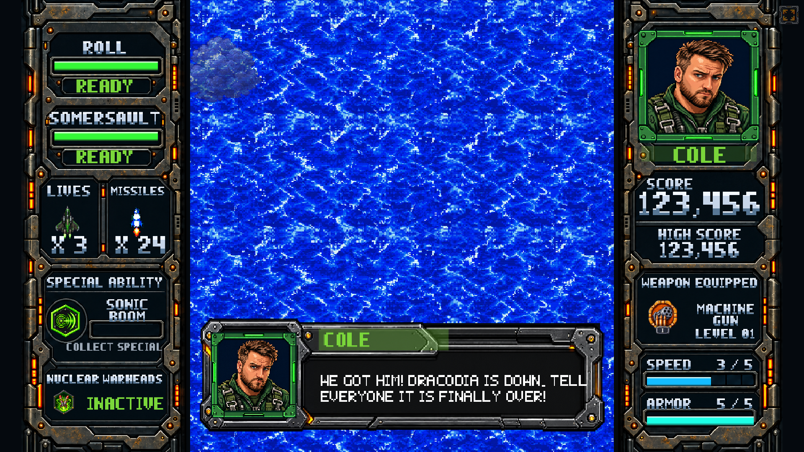

HUD rail templates
Live labels, solid meters, counts and ability states are drawn separately. The main game uses Command Armor; these exports keep the wells empty for your expansion.
Left rail · Right rail · Layout metadata
Cole — corrected front poses
Neutral, reporting, alarmed and speaking. Shared 512 × 1024 canvases; approved face, green flight suit and harness.
Selected HUD in the game

Templates include transparent WebP masters, named and blank variants, all pilot palette values, layout rectangles, source prompts and the original concept art. Talking portraits remain driven by the game’s existing mouth animation.